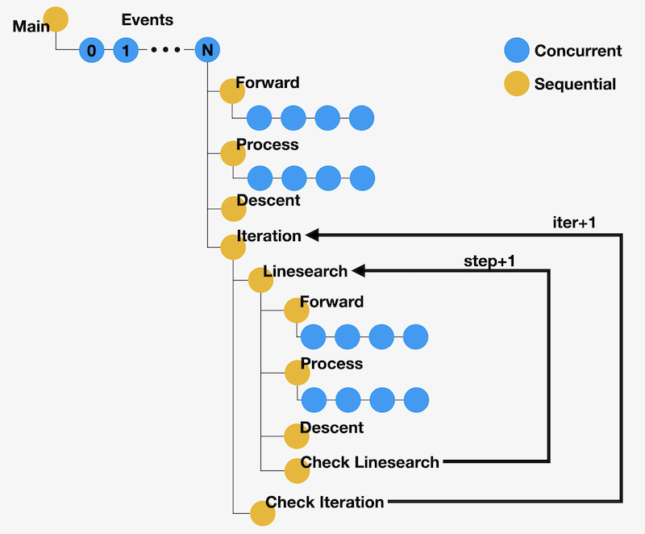
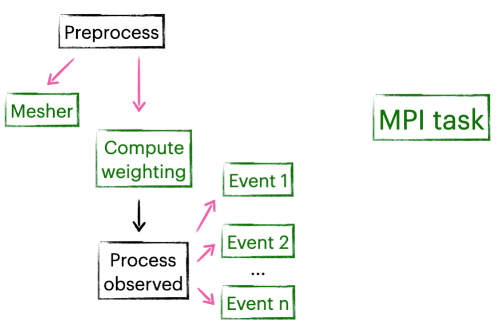
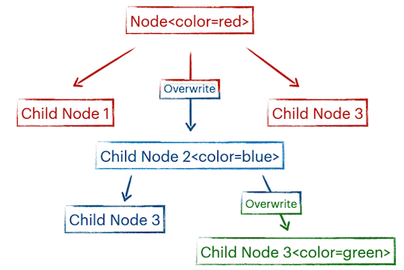

nnodes#
Nnodes is a simple workflow manager for Python functions and command line tools. It makes your life easier when running complicated jobs either in your local computer or in a large-scale cluster.
Intro slides (PDF), poster (PDF)
Quick start#
Installation
pip install nnodes
Running example (Gaussian inversion, requires numpy)
git clone https://github.com/icui/nnodes
cd nnodes/examples/gaussian
nnrun
Create a new workspace and run example
mkdir test
cd test
curl https://raw.githubusercontent.com/icui/nnodes/main/examples/gaussian/workflow.py > workflow.py
nnmk
# enter `workflow` when prompt `module containing the main task`
# enter `main` when prompt `function name of the main task`
nnrun
Commands
nnmknnrunnnlog
Features#
Progress control. No job progress will be lost in nnodes. The progress management is adaptable so that an interrupted workflow can be stopped and resumed at any point, and it is possible to rewind to a previous state if any parameter does not turn out to perform well; running a partial workflow or merging multiple workflows are also supported.
MPI execution. Parallel execution of MPI tasks is easy and no manual configuration is required. An MPI task from any part of the workflow will be sent to an MPI executor and be executed whenever the cluster resources is available. This makes sure that the node hours are fully utilized.
Parameter management. Inspired by HTML document, nnodes introduces a hierarchical parameter system that simplifies the process of passing parameters to functions. A parameter in the parent node will by default be propagated to the child node, unless overwritten. This eliminates the need to pass the same parameter to different functions under the same parent node.

Why nnodes?#
Workflow manager is essential for many scientific applications and there is a large number of existing workflow managers available. Many of them are mature and well maintained (see Workflows Community for a comprehensive list). However, we believe that nnodes still has unique advantages. In short, it is simpler than most general-purpose workflow managers and more flexible than most problem-specific workflow managers.
Simplicity. Most professional workflow managers have very steep learning curves, and are sometimes deeply bound with specific computing architectures. Nodes, on the other hand, provides a unified interface for all operations and utilizes only high level APIs. Migrating existing workflows to nnodes is seamless in most cases.
Flexibility. Nnodes is not tied to a specific scientific problem, and it is decided by the user how deeply they wish to integrate their projects with nnodes. Users can simply use nnodes as a progress controller, or MPI executor, which requires little code change, or they can go so far as to let nnodes manage their entire project.
Portability. Nnodes currently supports Slurm and LSF systems but also has API for users to define their custom environment. The workflow is saved in a single pickle file that can be transferred to a new system and continue from where it was left off. The MPI executor adapts automatically so no manual configuration is needed to utilize the full cluster resources.
Alternatives#
If you are looking for more options, below are some projects worth checking out: